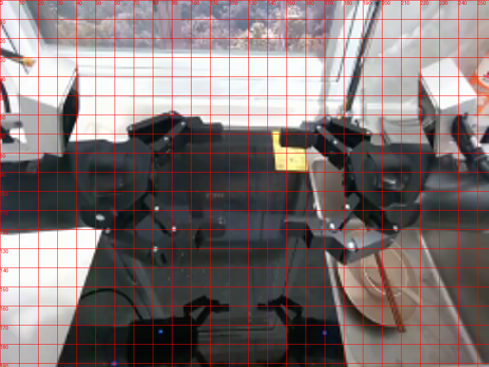
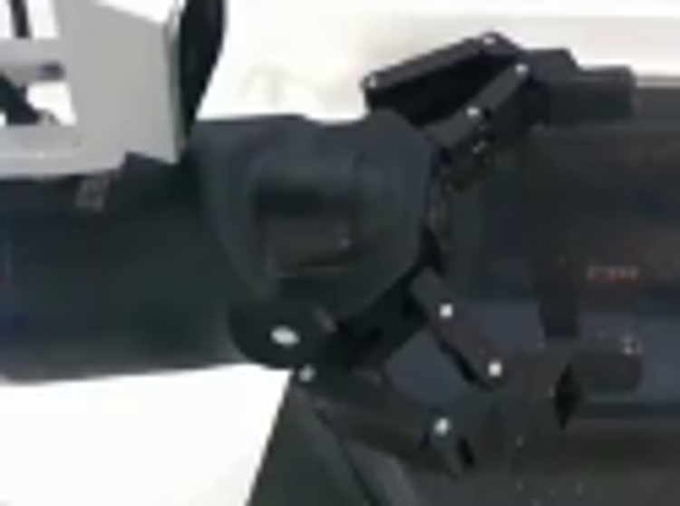
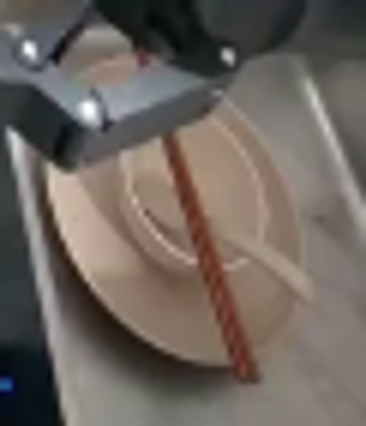
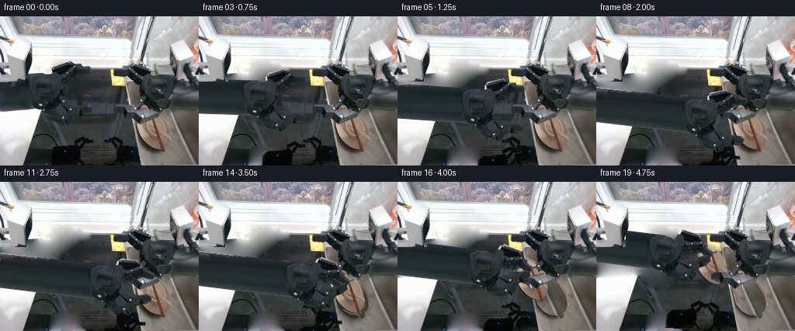
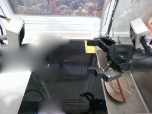
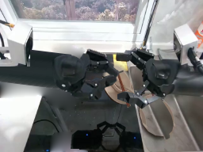
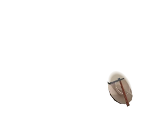
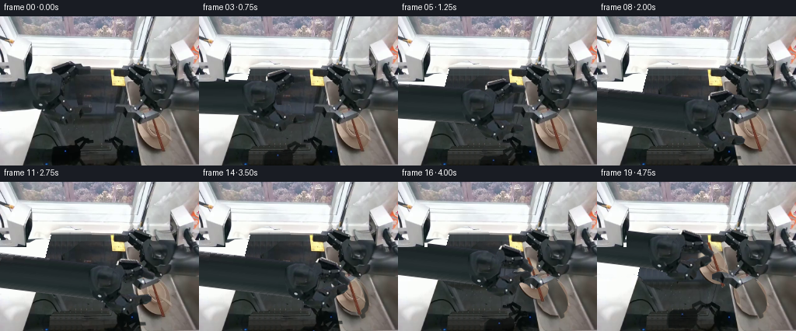
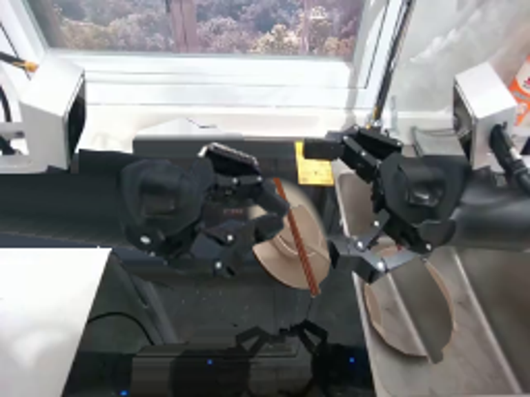

CODING AGENTS AS PIXEL WORLD MODELS
traex/GPT-6.1-Sol · common50_0004
点击播放 · 原生 RGB 像素
逐轮保存的候选
回放视频、检查图与代码变化。
每份候选均可单独播放。实际图片检查记录在下方工具轨迹中。
候选 01播放与检查图
点击播放 · 原生 RGB 像素

展开代码变化
--- 上一保存版本
+++ 本次保存版本
@@ -0,0 +1,199 @@
+from pathlib import Path
+import math
+import numpy as np
+from PIL import Image, ImageDraw, ImageFilter
+import artifact_io
+
+ROOT=Path(__file__).resolve().parent
+W,H=256,192
+S=4
+src=Image.open(ROOT/'first_frame.png').convert('RGB')
+a=np.asarray(src).copy()
+
+def mask(polys):
+ im=Image.new('L',(W*S,H*S),0); d=ImageDraw.Draw(im)
+ for p in polys:d.polygon([(round(x*S),round(y*S)) for x,y in p],fill=255)
+ return im.resize((W,H),Image.Resampling.LANCZOS)
+
+# Segmentation is specified directly from the sole supplied photograph.
+palm_poly=[(35,83),(39,79),(47,75),(56,74),(64,76),(70,79),(74,83),(78,89),(78,101),(76,109),(71,116),(66,121),(57,121),(50,119),(44,115),(40,110),(37,103),(35,93)]
+upper_poly=[(65,69),(68,64),(88,58),(94,61),(96,63),(104,62),(106,65),(115,65),(117,69),(116,73),(110,75),(103,75),(99,79),(92,85),(84,90),(77,92),(72,86),(66,82)]
+lower_poly=[(62,105),(69,103),(75,105),(80,111),(84,112),(90,112),(94,111),(100,115),(114,115),(118,119),(117,124),(110,127),(101,127),(95,130),(92,136),(86,139),(78,135),(71,135),(62,128),(57,121),(59,113)]
+pm=mask([palm_poly]); um=mask([upper_poly]); lm=mask([lower_poly])
+all_hand=np.maximum.reduce([np.asarray(pm),np.asarray(um),np.asarray(lm)])
+foremask=mask([[(0,85),(38,79),(48,84),(52,107),(45,120),(0,123)]])
+reflmask=mask([[(65,174),(72,168),(92,167),(96,160),(106,155),(113,159),(120,159),(121,163),(113,164),(108,168),(105,177),(103,185),(110,192),(64,192)]])
+
+# Harmonic reconstruction of the stationary surface only under the moving part.
+def fill_surface(rgb, m):
+ m=np.asarray(m)>40
+ # Start from neighbouring surface values and solve a discrete smooth extension.
+ out=rgb.astype(np.float32).copy()
+ yy,xx=np.indices(m.shape)
+ out[m]=np.array([56,63,65],np.float32)
+ for _ in range(1200):
+ z=(np.roll(out,1,0)+np.roll(out,-1,0)+np.roll(out,1,1)+np.roll(out,-1,1))*0.25
+ out[m]=z[m]
+ return np.clip(out,0,255).astype(np.uint8)
+
+# The dark arm sleeve is rebuilt as a single rigid link; the unseen joints are
+# outside the camera field. The visible palm and finger links are photo textures.
+remove=np.maximum(all_hand,np.asarray(foremask))
+remove=np.maximum(remove,np.asarray(reflmask))
+removeim=Image.fromarray(remove).filter(ImageFilter.MaxFilter(3))
+basearr=fill_surface(a,removeim)
+base=Image.fromarray(basearr)
+base.save(ROOT/'.tmp/background.png')
+
+def rgba_from(im, alpha):
+ r=im.convert('RGBA');r.putalpha(alpha);return r
+
+palm=rgba_from(src,pm);upper=rgba_from(src,um);lower=rgba_from(src,lm)
+reflect=rgba_from(src,reflmask)
+
+# Rigid transforms in the photograph's plane, inverse-mapped with bicubic
+# interpolation. Finger joints rotate about their own hinge pins.
+def transform(im,ang,pivot=(58.,96.),offset=(0.,0.)):
+ c,s=math.cos(math.radians(ang)),math.sin(math.radians(ang))
+ px,py=pivot; dx,dy=offset
+ # q = R (p-pivot) + pivot + offset
+ return im.transform((W,H),Image.Transform.AFFINE,
+ (c,s,px-c*(px+dx)-s*(py+dy),-s,c,py+s*(px+dx)-c*(py+dy)),Image.Resampling.BICUBIC)
+
+# Large fixed-length forearm, textured exclusively from the visible sleeve.
+arm=Image.new('RGBA',(W,H),(0,0,0,0))
+arm_a=np.zeros((H,W,4),dtype=np.uint8)
+# In the rest pose it extends off the left border to the wrist at (58,96).
+for y in range(74,122):
+ for x in range(0,59):
+ ey=(y-96)/23
+ if abs(ey)<=1:
+ sx=8+int((x+10)*.28)%24
+ sy=min(120,max(81,int(99+(y-96)*.84)))
+ arm_a[y,x,:3]=a[sy,sx]
+ arm_a[y,x,3]=255
+arm=Image.fromarray(arm_a,'RGBA')
+# Extend the same rigid sleeve to the left in a larger texture canvas by using
+# custom inverse mapping on each frame, not resizing an individual link.
+strip=np.asarray(src)[81:121,6:31].astype(np.float32)
+def render_arm(x,y,ang):
+ yy,xx=np.indices((H,W)); c=math.cos(math.radians(ang));s=math.sin(math.radians(ang))
+ u=(xx-x)*c+(yy-y)*s
+ v=-(xx-x)*s+(yy-y)*c
+ valid=(u>=-184)&(u<=-1)&(abs(v)<23)
+ # A bevel gives the long rigid sleeve the same cross-sectional shading.
+ sy=np.clip((20+v*.84).astype(int),0,39)
+ sx=np.clip((20+(u+30)*.065).astype(int),0,24)
+ rgb=strip[sy,sx]
+ alpha=np.clip(np.minimum(23-abs(v),np.minimum(u+184,-u))*255,0,255)*valid
+ ar=np.zeros((H,W,4),np.uint8);ar[:,:,:3]=rgb.astype(np.uint8); ar[:,:,3]=alpha.astype(np.uint8)
+ # Fixed white mounting bracket in front of the moving link.
+ ar[:84,:38,3]=0
+ return Image.fromarray(ar)
+
+# The beige objects already form a nested set in the basin. Complete only the
+# small portions hidden behind the stationary right gripper, then retain every
+# available photographed highlight, rim and chopstick pixel.
+platepoly=[(176.8,127),(177,123),(179,119),(184,116.5),(191,118),(198,122),(204,129),(210,138),(215,147),(217.5,157),(216,164),(211,169),(205,171),(197,170),(188,165),(181,156),(177.8,145),(176.5,134)]
+dishmask=mask([platepoly,[(193,130),(197,128),(213,173),(209,175)]])
+# Use source plate silhouettes: right/lower perimeter is unoccluded in frame 00.
+# The top rim hidden by the other hand is filled with an analytically shaded
+# elliptical continuation, anchored to the visible beige porcelain colors.
+yy,xx=np.indices((H*S,W*S)); X=xx/S;Y=yy/S
+cx,cy=197.,143.5; th=math.radians(-23)
+xr=(X-cx)*math.cos(th)+(Y-cy)*math.sin(th)
+yr=-(X-cx)*math.sin(th)+(Y-cy)*math.cos(th)
+r=np.sqrt((xr/18.2)**2+(yr/29)**2)
+shade=173+12*np.exp(-((r-.89)/.09)**2)-14*np.clip((Y-135)/45,0,1)+7*np.clip((190-X)/40,-1,1)
+dish_hi=np.zeros((H*S,W*S,4),np.uint8)
+dish_hi[:,:,:3]=np.clip(shade[:,:,None]*np.array([1.07,1.,.9]),0,255).astype(np.uint8)
+dish_hi[:,:,3]=np.clip((1-r)*S*255,0,255).astype(np.uint8)
+dish=Image.fromarray(dish_hi).resize((W,H),Image.Resampling.LANCZOS)
+# Overlay source texture below the original stationary hand (accurate edge).
+visible_poly=[(174,133),(179,136),(190,132),(202,128),(208,128),(218,147),(221,160),(217,169),(209,175),(197,173),(185,169),(178,159),(174,145)]
+vis=mask([visible_poly])
+vis=np.minimum(np.asarray(vis),np.asarray(dishmask))
+dish.alpha_composite(rgba_from(src,Image.fromarray(vis)))
+# Source chopstick pixels, kept as rigid pairs on top of the bowl.
+chopmask=mask([[(192.8,129),(196.6,127.5),(212.4,173),(208.6,174.5)]])
+dish.alpha_composite(rgba_from(src,chopmask))
+dish.save(ROOT/'.tmp/dish.png')
+
+# Bare metal revealed after the nested set is lifted: interpolate the sink
+# texture from the nearest unoccupied part of the same right basin.
+dishrem=Image.fromarray(np.maximum(np.asarray(dishmask),np.asarray(chopmask))).filter(ImageFilter.MaxFilter(3))
+empty=basearr.copy()
+for y in range(114,181):
+ for x in range(171,224):
+ if np.asarray(dishrem)[y,x]>10:
+ # Match the diagonal brushed sink floor with a neighbouring column.
+ sx=min(251,x+35)
+ sy=max(100,y-3)
+ val=a[sy,sx].astype(float)
+ val=val*.88 +np.array([122,119,113])*.12
+ empty[y,x]=np.clip(val,0,255)
+# Feather only metal replacement boundaries.
+af=np.asarray(dishrem,dtype=float)/255
+empty=np.clip(basearr*(1-af[:,:,None])+empty*af[:,:,None],0,255).astype(np.uint8)
+emptybase=Image.fromarray(empty)
+
+# Keep the image-right hand strictly fixed and use it as an occluder of the
+# lifted set. No robot body part is stretched, bent or synthesized by a model.
+rightmask=mask([[(143,68),(158,68),(160,64),(168,60),(175,62),(182,66),(190,68),(193,75),(208,75),(221,80),(224,89),(222,105),(217,115),(211,122),(201,123),(198,126),(184,134),(178,138),(172,137),(166,132),(161,130),(148,125),(148,119),(157,115),(167,117),(173,121),(183,118),(178,110),(179,100),(178,89),(166,84),(158,78),(145,77)]])
+right=rgba_from(src,rightmask)
+
+# Cubic timing, with contact dwell before lifting the rigid nested set.
+def smooth(t):return t*t*(3-2*t)
+def lerp(a,b,t):return np.asarray(a)+(np.asarray(b)-np.asarray(a))*t
+poses=[]
+for i in range(20):
+ if i<=9:
+ t=smooth(i/9)
+ pos=lerp((58,96),(136,130),t)
+ ang=7*t
+ close=0
+ lift=(0.,0.)
+ elif i<=13:
+ t=smooth((i-9)/4)
+ pos=np.array((136.,130.));ang=7
+ close=t
+ lift=(0.,0.)
+ else:
+ t=smooth((i-13)/6)
+ lift=tuple(lerp((0,0),(-48,-39),t))
+ pos=np.array((136.,130.))+np.array(lift)
+ ang=7; close=1
+ poses.append((pos,ang,close,lift))
+
+frames=[a.copy()]
+for i in range(1,20):
+ pos,ang,close,lift=poses[i]
+ dx,dy=pos-np.array((58,96))
+ if i<=13:
+ canvas=base.convert('RGBA')
+ else:
+ canvas=emptybase.convert('RGBA')
+ # Subtle contact shadow follows the set over the sink floor.
+ shadow=Image.new('L',(W,H)); sd=ImageDraw.Draw(shadow)
+ sd.ellipse((174+lift[0]+3,117+lift[1]+8,221+lift[0]+4,176+lift[1]+8),fill=65)
+ shadow=shadow.filter(ImageFilter.GaussianBlur(3))
+ sh=Image.new('RGBA',(W,H),(15,19,18,0));sh.putalpha(shadow);canvas.alpha_composite(sh)
+ canvas.alpha_composite(transform(dish,0,(197,144),lift))
+ canvas.alpha_composite(right)
+ # Reflection of the left link travels together, foreshortened on the floor.
+ ref=transform(reflect,ang*.3,(88,180),(dx*.85,dy*.6))
+ canvas.alpha_composite(ref)
+ canvas.alpha_composite(render_arm(float(pos[0]),float(pos[1]),ang))
+ # Rotate each link about a real hinge, then rigidly rotate/translate assembly.
+ u=transform(upper,31*close,(76,85),(0,0))
+ l=transform(lower,-27*close,(67,110),(0,0))
+ canvas.alpha_composite(transform(u,ang,(58,96),(dx,dy)))
+ canvas.alpha_composite(transform(l,ang,(58,96),(dx,dy)))
+ canvas.alpha_composite(transform(palm,ang,(58,96),(dx,dy)))
+ # Preserve the stationary left mounting bracket over the moving sleeve.
+ final=np.asarray(canvas.convert('RGB')).copy()
+ final[:84,:34]=a[:84,:34]
+ frames.append(final)
+frames=np.stack(frames).astype(np.uint8)
+assert np.array_equal(frames[0],a)
+artifact_io.save(frames,ROOT)
候选 02播放与检查图
点击播放 · 原生 RGB 像素

展开代码变化
--- 上一保存版本
+++ 本次保存版本
@@ -42,6 +42,27 @@
remove=np.maximum(remove,np.asarray(reflmask))
removeim=Image.fromarray(remove).filter(ImageFilter.MaxFilter(3))
basearr=fill_surface(a,removeim)
+# Reconstruct the two planar surfaces rather than spreading the bright window
+# into the dark worktop. Samples come from unoccluded pixels of those planes.
+rm=np.asarray(removeim,dtype=float)/255
+reconstructed=basearr.copy()
+for y in range(H):
+ for x in range(W):
+ if rm[y,x]==0: continue
+ if y<68:
+ value=a[max(46,min(57,y-8)),x].astype(float)
+ if y>=65:
+ t=(y-64)/4
+ value=value*(1-t)+a[72,132].astype(float)*t
+ elif x<83-.26*y:
+ value=a[min(186,131+int((y-80)*.35)),max(1,min(22,x//2))].astype(float)
+ elif y<154:
+ value=a[max(70,min(156,y)),128+(x%8)].astype(float)
+ value=value*np.array([.96,.98,.98])
+ else:
+ value=a[y,124+(x%7)].astype(float)*.98
+ reconstructed[y,x]=np.clip(value*rm[y,x]+a[y,x]*(1-rm[y,x]),0,255)
+basearr=reconstructed
base=Image.fromarray(basearr)
base.save(ROOT/'.tmp/background.png')
@@ -109,13 +130,29 @@
dish_hi[:,:,:3]=np.clip(shade[:,:,None]*np.array([1.07,1.,.9]),0,255).astype(np.uint8)
dish_hi[:,:,3]=np.clip((1-r)*S*255,0,255).astype(np.uint8)
dish=Image.fromarray(dish_hi).resize((W,H),Image.Resampling.LANCZOS)
+# Continuation of the smaller bowl rim where it was hidden by the right hand.
+br=np.sqrt((xr/12.0)**2+((yr+1.7)/19.8)**2)
+bshade=163+24*np.exp(-((br-.93)/.075)**2)+7*np.clip(-yr/25,-1,1)
+bowl=np.zeros((H*S,W*S,4),np.uint8)
+bowl[:,:,:3]=np.clip(bshade[:,:,None]*np.array([1.07,1.,.90]),0,255)
+bowl[:,:,3]=np.clip((1-br)*S*255,0,255)
+dish.alpha_composite(Image.fromarray(bowl).resize((W,H),Image.Resampling.LANCZOS))
# Overlay source texture below the original stationary hand (accurate edge).
visible_poly=[(174,133),(179,136),(190,132),(202,128),(208,128),(218,147),(221,160),(217,169),(209,175),(197,173),(185,169),(178,159),(174,145)]
vis=mask([visible_poly])
vis=np.minimum(np.asarray(vis),np.asarray(dishmask))
+vy,vx=np.indices((H,W))
+# The diagonal lower edge of the original stationary finger is not porcelain.
+vis[vy < (139-.37*(vx-177))]=0
dish.alpha_composite(rgba_from(src,Image.fromarray(vis)))
# Source chopstick pixels, kept as rigid pairs on top of the bowl.
-chopmask=mask([[(192.8,129),(196.6,127.5),(212.4,173),(208.6,174.5)]])
+chopmask=mask([[(195.0,134),(198.0,133),(212.4,173),(208.6,174.5)]])
+# Draw only the portions of the two straight wooden sticks previously hidden.
+wood=Image.new('RGBA',(W*S,H*S));wd=ImageDraw.Draw(wood)
+for p0,p1 in [((190.4,117),(210,173)),((192.1,117),(211.5,172.6))]:
+ wd.line(tuple(round(v*S) for p in (p0,p1) for v in p),fill=(104,51,31,255),width=round(1.2*S))
+ wd.line(tuple(round(v*S) for p in ((p0[0]-.25,p0[1]),(p1[0]-.25,p1[1])) for v in p),fill=(146,79,50,255),width=2)
+dish.alpha_composite(wood.resize((W,H),Image.Resampling.LANCZOS))
dish.alpha_composite(rgba_from(src,chopmask))
dish.save(ROOT/'.tmp/dish.png')
@@ -182,6 +219,7 @@
canvas.alpha_composite(right)
# Reflection of the left link travels together, foreshortened on the floor.
ref=transform(reflect,ang*.3,(88,180),(dx*.85,dy*.6))
+ ref.putalpha(ref.getchannel('A').point(lambda v:int(v*.65)))
canvas.alpha_composite(ref)
canvas.alpha_composite(render_arm(float(pos[0]),float(pos[1]),ang))
# Rotate each link about a real hinge, then rigidly rotate/translate assembly.
候选 03播放与检查图

候选 04播放与检查图
点击播放 · 原生 RGB 像素
展开代码变化
--- 上一保存版本
+++ 本次保存版本
@@ -50,17 +50,17 @@
for x in range(W):
if rm[y,x]==0: continue
if y<68:
- value=a[max(46,min(57,y-8)),x].astype(float)
+ value=a[51,x].astype(float)
if y>=65:
t=(y-64)/4
value=value*(1-t)+a[72,132].astype(float)*t
- elif x<83-.26*y:
+ elif y>119 and x<54-.24*(y-119):
value=a[min(186,131+int((y-80)*.35)),max(1,min(22,x//2))].astype(float)
elif y<154:
- value=a[max(70,min(156,y)),128+(x%8)].astype(float)
+ value=a[max(70,min(156,y)),124:137].mean(axis=0)
value=value*np.array([.96,.98,.98])
else:
- value=a[y,124+(x%7)].astype(float)*.98
+ value=a[y,119:135].mean(axis=0)*.98
reconstructed[y,x]=np.clip(value*rm[y,x]+a[y,x]*(1-rm[y,x]),0,255)
basearr=reconstructed
base=Image.fromarray(basearr)
@@ -197,7 +197,7 @@
lift=(0.,0.)
else:
t=smooth((i-13)/6)
- lift=tuple(lerp((0,0),(-48,-39),t))
+ lift=tuple(lerp((0,0),(-58,-31),t))
pos=np.array((136.,130.))+np.array(lift)
ang=7; close=1
poses.append((pos,ang,close,lift))
@@ -215,8 +215,8 @@
sd.ellipse((174+lift[0]+3,117+lift[1]+8,221+lift[0]+4,176+lift[1]+8),fill=65)
shadow=shadow.filter(ImageFilter.GaussianBlur(3))
sh=Image.new('RGBA',(W,H),(15,19,18,0));sh.putalpha(shadow);canvas.alpha_composite(sh)
+ canvas.alpha_composite(right)
canvas.alpha_composite(transform(dish,0,(197,144),lift))
- canvas.alpha_composite(right)
# Reflection of the left link travels together, foreshortened on the floor.
ref=transform(reflect,ang*.3,(88,180),(dx*.85,dy*.6))
ref.putalpha(ref.getchannel('A').point(lambda v:int(v*.65)))
候选 05播放与检查图
候选 06播放与检查图
点击播放 · 原生 RGB 像素
展开代码变化
--- 上一保存版本
+++ 本次保存版本
@@ -164,10 +164,10 @@
for x in range(171,224):
if np.asarray(dishrem)[y,x]>10:
# Match the diagonal brushed sink floor with a neighbouring column.
- sx=min(251,x+35)
+ sx=min(250,229+int((x-171)*.20))
sy=max(100,y-3)
val=a[sy,sx].astype(float)
- val=val*.88 +np.array([122,119,113])*.12
+ val=val*.75 +np.array([136,133,127])*.25
empty[y,x]=np.clip(val,0,255)
# Feather only metal replacement boundaries.
af=np.asarray(dishrem,dtype=float)/255
@@ -215,7 +215,13 @@
sd.ellipse((174+lift[0]+3,117+lift[1]+8,221+lift[0]+4,176+lift[1]+8),fill=65)
shadow=shadow.filter(ImageFilter.GaussianBlur(3))
sh=Image.new('RGBA',(W,H),(15,19,18,0));sh.putalpha(shadow);canvas.alpha_composite(sh)
- canvas.alpha_composite(right)
+ # Only the actual right-hand pixels occlude the cleaned floor, rather
+ # than the porcelain that lay between its fingers in the source image.
+ rr=np.asarray(right).copy()
+ ry,rx=np.indices((H,W))
+ gap=(ry>139-.37*(rx-177))&(ry>123)&(rx>173)
+ rr[gap,3]=0
+ canvas.alpha_composite(Image.fromarray(rr))
canvas.alpha_composite(transform(dish,0,(197,144),lift))
# Reflection of the left link travels together, foreshortened on the floor.
ref=transform(reflect,ang*.3,(88,180),(dx*.85,dy*.6))
可观测工具轨迹
实际执行的命令与返回图片。
命令 1exit 0
/bin/bash -lc "ls -la && cat prompt.txt && printf '\\n---RULES---\\n' && cat GENERATION_RULES.md"
命令 2exit 0
/bin/bash -lc 'cat task_spec.json && cat artifact_io.py'
命令 3exit 0
/bin/bash -lc "python - <<'PY'
from PIL import Image
im=Image.open('first_frame.png'); print(im.size); im.resize((1024,768)).save('.tmp/large.png')
PY"命令 4exit 0
/bin/bash -lc "python - <<'PY'
from PIL import Image,ImageDraw
im=Image.open('first_frame.png').resize((1024,768)); d=ImageDraw.Draw(im)
for x in range(0,257,10):
d.line((x*4,0,x*4,768),fill=(255,0,0),width=1); d.text((x*4,0),str(x),fill=(255,0,0))
for y in range(0,193,10):
d.line((0,y*4,1024,y*4),fill=(255,0,0),width=1); d.text((0,y*4),str(y),fill=(255,0,0))
im.save('.tmp/grid.png')
PY"命令 5exit 0
/bin/bash -lc "python - <<'PY'
from PIL import Image
im=Image.open('first_frame.png')
for name,box in [('left',(0,52,125,145)),('dish',(169,110,230,181)),('reflect',(28,145,130,192))]:
im.crop(box).resize(((box[2]-box[0])*6,(box[3]-box[1])*6)).save('.tmp/'+name+'.png')
PY"命令 6exit 0
/bin/bash -lc "cat > generate.py <<'PY'
from pathlib import Path
import math
import numpy as np
from PIL import Image, ImageDraw, ImageFilter
import artifact_io
ROOT=Path(__file__).resolve().parent
W,H=256,192
S=4
src=Image.open(ROOT/'first_frame.png').convert('RGB')
a=np.asarray(src).copy()
def mask(polys):
im=Image.new('L',(W*S,H*S),0); d=ImageDraw.Draw(im)
for p in polys:d.polygon([(round(x*S),round(y*S)) for x,y in p],fill=255)
return im.resize((W,H),Image.Resampling.LANCZOS)
# Segmentation is specified directly from the sole supplied photograph.
palm_poly=[(35,83),(39,79),(47,75),(56,74),(64,76),(70,79),(74,83),(78,89),(78,101),(76,109),(71,116),(66,121),(57,121),(50,119),(44,115),(40,110),(37,103),(35,93)]
upper_poly=[(65,69),(68,64),(88,58),(94,61),(96,63),(104,62),(106,65),(115,65),(117,69),(116,73),(110,75),(103,75),(99,79),(92,85),(84,90),(77,92),(72,86),(66,82)]
lower_poly=[(62,105),(69,103),(75,105),(80,111),(84,112),(90,112),(94,111),(100,115),(114,115),(118,119),(117,124),(110,127),(101,127),(95,130),(92,136),(86,139),(78,135),(71,135),(62,128),(57,121),(59,113)]
pm=mask([palm_poly]); um=mask([upper_poly]); lm=mask([lower_poly])
all_hand=np.maximum.reduce([np.asarray(pm),np.asarray(um),np.asarray(lm)])
foremask=mask([[(0,85),(38,79),(48,84),(52,107),(45,120),(0,123)]])
reflmask=mask([[(65,174),(72,168),(92,167),(96,160),(106,155),(113,159),(120,159),(121,163),(113,164),(108,168),(105,177),(103,185),(110,192),(64,192)]])
# Harmonic reconstruction of the stationary surface only under the moving part.
def fill_surface(rgb, m):
m=np.asarray(m)>40
# Start from neighbouring surface values and solve a discrete smooth extension.
out=rgb.astype(np.float32).copy()
yy,xx=np.indices(m.shape)
out[m]=np.array([56,63,65],np.float32)
for _ in range(1200):
z=(np.roll(out,1,0)+np.roll(out,-1,0)+np.roll(out,1,1)+np.roll(out,-1,1))*0.25
out[m]=z[m]
return np.clip(out,0,255).astype(np.uint8)
# The dark arm sleeve is rebuilt as a single rigid link; the unseen joints are
# outside the camera field. The visible palm and finger links are photo textures.
remove=np.maximum(all_hand,np.asarray(foremask))
remove=np.maximum(remove,np.asarray(reflmask))
removeim=Image.fromarray(remove).filter(ImageFilter.MaxFilter(3))
basearr=fill_surface(a,removeim)
base=Image.fromarray(basearr)
base.save(ROOT/'.tmp/background.png')
def rgba_from(im, alpha):
r=im.convert('RGBA');r.putalpha(alpha);return r
palm=rgba_from(src,pm);upper=rgba_from(src,um);lower=rgba_from(src,lm)
reflect=rgba_from(src,reflmask)
# Rigid transforms in the photograph's plane, inverse-mapped with bicubic
# interpolation. Finger joints rotate about their own hinge pins.
def transform(im,ang,pivot=(58.,96.),offset=(0.,0.)):
c,s=math.cos(math.radians(ang)),math.sin(math.radians(ang))
px,py=pivot; dx,dy=offset
# q = R (p-pivot) + pivot + offset
return im.transform((W,H),Image.Transform.AFFINE,
(c,s,px-c*(px+dx)-s*(py+dy),-s,c,py+s*(px+dx)-c*(py+dy)),Image.Resampling.BICUBIC)
# Large fixed-length forearm, textured exclusively from the visible sleeve.
arm=Image.new('RGBA',(W,H),(0,0,0,0))
arm_a=np.zeros((H,W,4),dtype=np.uint8)
# In the rest pose it extends off the left border to the wrist at (58,96).
for y in range(74,122):
for x in range(0,59):
ey=(y-96)/23
if abs(ey)<=1:
sx=8+int((x+10)*.28)%24
sy=min(120,max(81,int(99+(y-96)*.84)))
arm_a[y,x,:3]=a[sy,sx]
arm_a[y,x,3]=255
arm=Image.fromarray(arm_a,'RGBA')
# Extend the same rigid sleeve to the left in a larger texture canvas by using
# custom inverse mapping on each frame, not resizing an individual link.
strip=np.asarray(src)[81:121,6:31].astype(np.float32)
def render_arm(x,y,ang):
yy,xx=np.indices((H,W)); c=math.cos(math.radians(ang));s=math.sin(math.radians(ang))
u=(xx-x)*c+(yy-y)*s
v=-(xx-x)*s+(yy-y)*c
valid=(u>=-184)&(u<=-1)&(abs(v)<23)
# A bevel gives the long rigid sleeve the same cross-sectional shading.
sy=np.clip((20+v*.84).astype(int),0,39)
sx=np.clip((20+(u+30)*.065).astype(int),0,24)
rgb=strip[sy,sx]
alpha=np.clip(np.minimum(23-abs(v),np.minimum(u+184,-u))*255,0,255)*valid
ar=np.zeros((H,W,4),np.uint8);ar[:,:,:3]=rgb.astype(np.uint8); ar[:,:,3]=alpha.astype(np.uint8)
# Fixed white mounting bracket in front of the moving link.
ar[:84,:38,3]=0
return Image.fromarray(ar)
# The beige objects already form a nested set in the basin. Complete only the
# small portions hidden behind the stationary right gripper, then retain every
# available photographed highlight, rim and chopstick pixel.
platepoly=[(176.8,127),(177,123),(179,119),(184,116.5),(191,118),(198,122),(204,129),(210,138),(215,147),(217.5,157),(216,164),(211,169),(205,171),(197,170),(188,165),(181,156),(177.8,145),(176.5,134)]
dishmask=mask([platepoly,[(193,130),(197,128),(213,173),(209,175)]])
# Use source plate silhouettes: right/lower perimeter is unoccluded in frame 00.
# The top rim hidden by the other hand is filled with an analytically shaded
# elliptical continuation, anchored to the visible beige porcelain colors.
yy,xx=np.indices((H*S,W*S)); X=xx/S;Y=yy/S
cx,cy=197.,143.5; th=math.radians(-23)
xr=(X-cx)*math.cos(th)+(Y-cy)*math.sin(th)
yr=-(X-cx)*math.sin(th)+(Y-cy)*math.cos(th)
r=np.sqrt((xr/18.2)**2+(yr/29)**2)
shade=173+12*np.exp(-((r-.89)/.09)**2)-14*np.clip((Y-135)/45,0,1)+7*np.clip((190-X)/40,-1,1)
dish_hi=np.zeros((H*S,W*S,4),np.uint8)
dish_hi[:,:,:3]=np.clip(shade[:,:,None]*np.array([1.07,1.,.9]),0,255).astype(np.uint8)
dish_hi[:,:,3]=np.clip((1-r)*S*255,0,255).astype(np.uint8)
dish=Image.fromarray(dish_hi).resize((W,H),Image.Resampling.LANCZOS)
# Overlay source texture below the original stationary hand (accurate edge).
visible_poly=[(174,133),(179,136),(190,132),(202,128),(208,128),(218,147),(221,160),(217,169),(209,175),(197,173),(185,169),(178,159),(174,145)]
vis=mask([visible_poly])
vis=np.minimum(np.asarray(vis),np.asarray(dishmask))
dish.alpha_composite(rgba_from(src,Image.fromarray(vis)))
# Source chopstick pixels, kept as rigid pairs on top of the bowl.
chopmask=mask([[(192.8,129),(196.6,127.5),(212.4,173),(208.6,174.5)]])
dish.alpha_composite(rgba_from(src,chopmask))
dish.save(ROOT/'.tmp/dish.png')
# Bare metal revealed after the nested set is lifted: interpolate the sink
# texture from the nearest unoccupied part of the same right basin.
dishrem=Image.fromarray(np.maximum(np.asarray(dishmask),np.asarray(chopmask))).filter(ImageFilter.MaxFilter(3))
empty=basearr.copy()
for y in range(114,181):
for x in range(171,224):
if np.asarray(dishrem)[y,x]>10:
# Match the diagonal brushed sink floor with a neighbouring column.
sx=min(251,x+35)
sy=max(100,y-3)
val=a[sy,sx].astype(float)
val=val*.88 +np.array([122,119,113])*.12
empty[y,x]=np.clip(val,0,255)
# Feather only metal replacement boundaries.
af=np.asarray(dishrem,dtype=float)/255
empty=np.clip(basearr*(1-af[:,:,None])+empty*af[:,:,None],0,255).astype(np.uint8)
emptybase=Image.fromarray(empty)
# Keep the image-right hand strictly fixed and use it as an occluder of the
# lifted set. No robot body part is stretched, bent or synthesized by a model.
rightmask=mask([[(143,68),(158,68),(160,64),(168,60),(175,62),(182,66),(190,68),(193,75),(208,75),(221,80),(224,89),(222,105),(217,115),(211,122),(201,123),(198,126),(184,134),(178,138),(172,137),(166,132),(161,130),(148,125),(148,119),(157,115),(167,117),(173,121),(183,118),(178,110),(179,100),(178,89),(166,84),(158,78),(145,77)]])
right=rgba_from(src,rightmask)
# Cubic timing, with contact dwell before lifting the rigid nested set.
def smooth(t):return t*t*(3-2*t)
def lerp(a,b,t):return np.asarray(a)+(np.asarray(b)-np.asarray(a))*t
poses=[]
for i in range(20):
if i<=9:
t=smooth(i/9)
pos=lerp((58,96),(136,130),t)
ang=7*t
close=0
lift=(0.,0.)
elif i<=13:
t=smooth((i-9)/4)
pos=np.array((136.,130.));ang=7
close=t
lift=(0.,0.)
else:
t=smooth((i-13)/6)
lift=tuple(lerp((0,0),(-48,-39),t))
pos=np.array((136.,130.))+np.array(lift)
ang=7; close=1
poses.append((pos,ang,close,lift))
frames=[a.copy()]
for i in range(1,20):
pos,ang,close,lift=poses[i]
dx,dy=pos-np.array((58,96))
if i<=13:
canvas=base.convert('RGBA')
else:
canvas=emptybase.convert('RGBA')
# Subtle contact shadow follows the set over the sink floor.
shadow=Image.new('L',(W,H)); sd=ImageDraw.Draw(shadow)
sd.ellipse((174+lift[0]+3,117+lift[1]+8,221+lift[0]+4,176+lift[1]+8),fill=65)
shadow=shadow.filter(ImageFilter.GaussianBlur(3))
sh=Image.new('RGBA',(W,H),(15,19,18,0));sh.putalpha(shadow);canvas.alpha_composite(sh)
canvas.alpha_composite(transform(dish,0,(197,144),lift))
canvas.alpha_composite(right)
# Reflection of the left link travels together, foreshortened on the floor.
ref=transform(reflect,ang*.3,(88,180),(dx*.85,dy*.6))
canvas.alpha_composite(ref)
canvas.alpha_composite(render_arm(float(pos[0]),float(pos[1]),ang))
# Rotate each link about a real hinge, then rigidly rotate/translate assembly.
u=transform(upper,31*close,(76,85),(0,0))
l=transform(lower,-27*close,(67,110),(0,0))
canvas.alpha_composite(transform(u,ang,(58,96),(dx,dy)))
canvas.alpha_composite(transform(l,ang,(58,96),(dx,dy)))
canvas.alpha_composite(transform(palm,ang,(58,96),(dx,dy)))
# Preserve the stationary left mounting bracket over the moving sleeve.
final=np.asarray(canvas.convert('RGB')).copy()
final[:84,:34]=a[:84,:34]
frames.append(final)
frames=np.stack(frames).astype(np.uint8)
assert np.array_equal(frames[0],a)
artifact_io.save(frames,ROOT)
PY
python generate.py"命令 7exit 0
/bin/bash -lc 'python generate.py'
命令 8exit 0
/bin/bash -lc "python generate.py && python - <<'PY'
from PIL import Image
import numpy as np
from pathlib import Path
p=np.load('pixels.npz')['pixels']
print('Packed video:',p.shape,p.dtype)
print('First frame identical:',np.array_equal(np.asarray(Image.open('first_frame.png').convert('RGB')),np.asarray(Image.open('frames/00.png'))))
Image.open('frames/19.png').resize((768,576)).save('.tmp/final_large.png')
PY"命令 9exit 0
/bin/bash -lc 'python generate.py'
视觉工具实际返回图片 1

视觉工具实际返回图片 2

视觉工具实际返回图片 3

视觉工具实际返回图片 4

视觉工具实际返回图片 5

视觉工具实际返回图片 6

视觉工具实际返回图片 7

视觉工具实际返回图片 8

视觉工具实际返回图片 9

视觉工具实际返回图片 10

保存候选 6 份；完成命令 9 次；可验证图片返回 10 张。原始 API 响应与完整日志保留在本地。